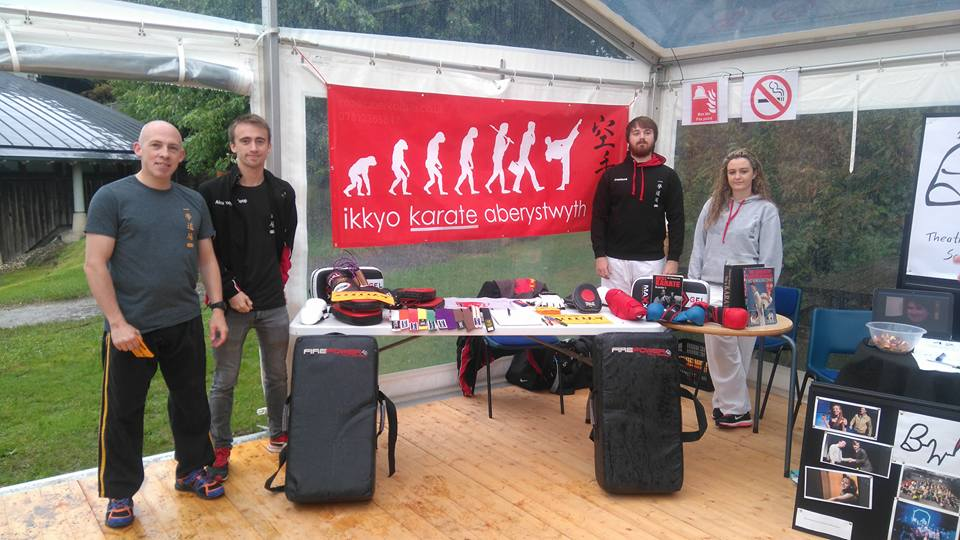

Alexander John Toop
Me.
I'm a Undergraduate Software Engineer currently studying at Aberystwyth University. This website was made to provide more information about me and the projects I've previously worked on.
Projects.
Arduino Hardware and Programming
Xcode App Development
Website development
See 'Projects' for more information.

Hobbies.
In my spare time I enjoy photography and practising Shotokan Karate.
I am currently President of the Aberystwyth University Karate Club and so help organise and teach.